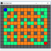

voltar
Desenvolvimento de Jogos

Esse é um jogo de tênis arcade com uma pequena diferença: Ao invés de uma raquete, você tem a força da gravidade.
Jogue online no Kongregate.

Este é um simples jogo de sinuca 2D feito com C, SDL, e física Chipmunk.
Inclui jogo livre, 14+1 e Bola Oito. Também um Pêndulo de Newton como bônus.
Faça o download gratuitamente no Itch.io.

Um projeto rápido para experimentar a excelente biblioteca de física Chipmunk.
Confira o repositório, baixe o executável ou confira esse clipe!
Feito em C com SDL.

Astro é um protótipo de jogo estilo top-down ("visto de cima") onde você pilota uma espaçonave na veia de Starflight
ou Star Control. Ele apresenta geração processual de sistemas solares, estações espaciais em orbita ao longo do sistema,
e uma simulação de gravidade bem robusta. Também montei alguns instrumentos na interface para ajudar o jogador a atingir
órbitas estáveis.

O propósito desse projeto foi demonstrar algumas aptidões incluindo:
- Utilização de uma biblioteca de terceiros, a Fisica, para as simulações físicas (!)
do jogo, incluindo colisões, fricção e outras forças.
- Implementação de um sistema de itens que podem ser adquiridos e utilizados pelos jogadores, demonstrando herança e polimorfismo.
- Modularidade e manipulação de arquivos com um editor de mapas completo e a habilidade de salvar e carregar mapas.

Esse foi um clone (praticamente) perfeito do Pac-Man em Processing destinado para uma oficina sobre inteligência
artificial no Garoa Hacker Clube, 25 de setembro de 2018. Nós conseguimos desenvolver IAs funcionais para os
fantasminhas usando o algoritmo A*!

Esse foi um clone do Bomberman desenvolvido do zero dentro de 3 horas em Processing durante a oficina de 27
de fevereiro de 2018 no Garoa Hacker Clube sobre desenvolvimento de jogos arcade. Os presentes selecionaram
Bomberman no voto, e nós conseguimos criar um jogo funcional com multiplayer local!

Esse é um joguinho de nave visto de cima, também feito do zero em 3 horas com Processing durante a oficina de desenvolvimento
de jogos do Processing Community Day São Paulo 2019. A nossa criação entra numa definição bem solta da palavra 'jogo'.
Todos ficamos bem satisfeitos de voar pelo espaço explorando o planetas e tantando entrar em orbita ao redor deles.

Outros protótipos e esboços.
voltar